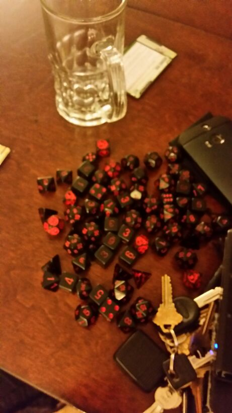
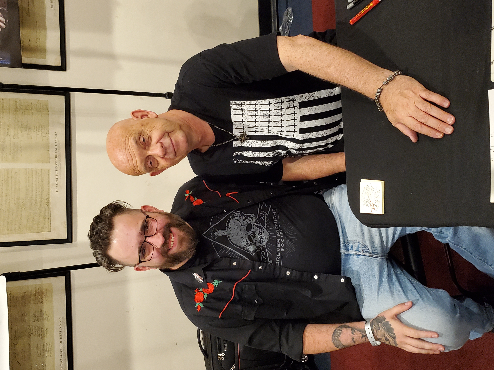
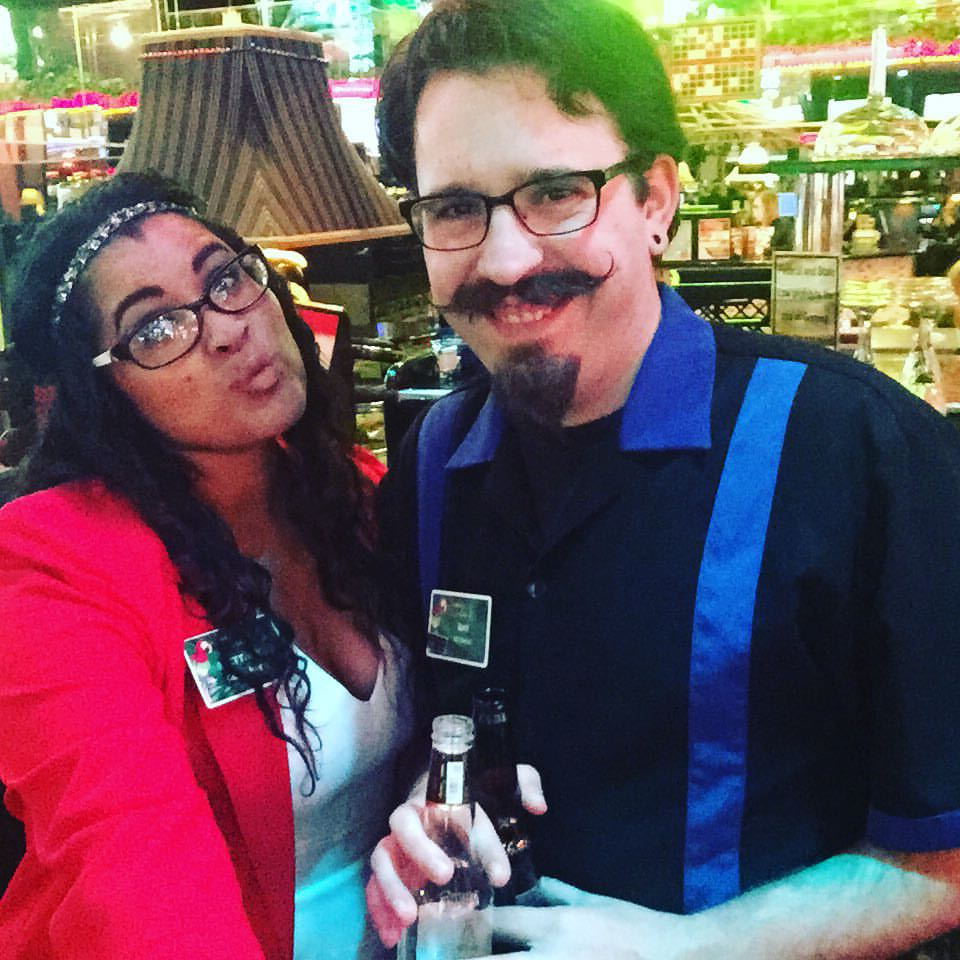

All about Ray.
Here at last is a subject I consider myself an expert in. Born in San Diego but left before I was a year old. I spent the better part of the last thrity seven years living in the Carson Valley area. I grew up in South Lake Tahoe untill I was about 10, from there moving down to Gardnerville. I lived between Gardnerville and Carson City for the majority of my life. In 2021 I decided it was time for a change of pace and re-located to Oklahoma.
 I'm one of those people that has more hobbies than time. When I find something that interests me I can't help but persue it tenaciously. My favorite hobbies include watching movies, reading, learning to work on classic cars, video games, dungeons and dragons and all manner of other nerdy things.
 Im a huge fan of anything horror related, movies, books, music. Ive attended horror conventions and I have a massive collection of movies, everything from serious highborw fare to the trashiest low budget B movies. Everyone asks for a top five list of movies but it's like trying to pick a favorite child. Typically when im working at the computer I'll leave random horor movies on in the background.
 For the bulk of my working life I worked as a casino bartender, twelve years at the same place between day swing and graveyard shift. One of my favorite regular customers became a good friend and offerd me a job working for him selling mattresses at his store. Because of the nature of that business I spent a great amount of time running things on my own, from open to close I handled almost every aspect of the operation until I moved out of state.